Data Scientist | ML Engineer | AI Specialist
Turning Code into Intelligence – Your AI & Data Science Ally!
A Senior AI/ML Engineer & Data Scientist with 5+ years of experience building production-grade AI systems that deliver real business impact. My current focus is on designing and maturing AI agents, and agentic workflows, moving them from experimental prototypes to reliable, autonomous systems that operate at scale.
• My core expertise spans Agentic AI Systems, LLMs, Generative AI, MLOps, and Data Engineering, with deep hands-on experience across Healthcare, Legal, Finance, Logistics, Sales, and Customer Support.
• I've architected solutions for industry leaders including Motorola, Caliber Home Loans, and Logitech, where the measure of success was always business outcome, not model accuracy alone.
• I operate at the intersection of engineering and strategy, leading AI/ML teams, owning end-to-end pipelines from data to deployment, and working directly with stakeholders to turn complex AI capabilities into decisions that move the needle.
Outside of work, I follow AI research and industry trends closely and enjoy exploring new food spots, because great ideas, like great food, are worth seeking out.
If you're building something ambitious with AI, let's talk.
Skills
Experience
Education
Certifications
Design and deploy intelligent systems for predictive analytics.
Learn moreBuild robust data pipelines and interactive dashboards.
Learn moreFinancial ML Feature Engineering Toolkit
A powerful Python library for converting raw financial market data into machine learning-ready features. Built on Polars for 10-100x faster performance with built-in safeguards against look-ahead bias.
pip install finasys
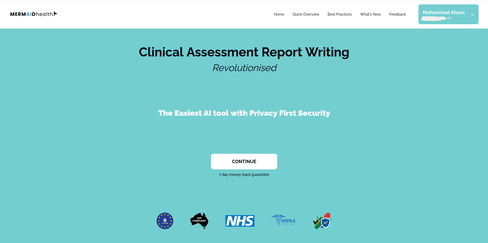
An AI-powered solution transforming clinical assessment report writing and health management. Mermaid Health automates the generation of comprehensive clinical reports, reducing processing time while enhancing diagnostic accuracy. By leveraging advanced AI models, it streamlines documentation workflows, enabling healthcare professionals to focus on patient care rather than administrative tasks.
Skills: Tensorflow, NLTK, SpaCy, LangChain, LangGraph, Chroma, Docker, OpenAI, Fitz
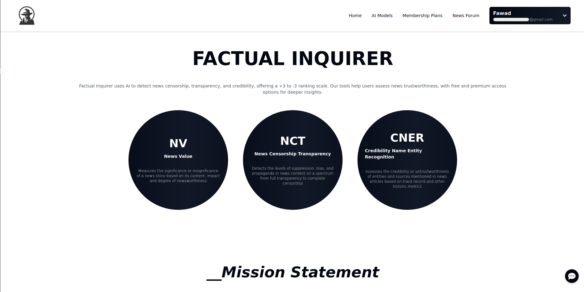
An AI-driven platform that evaluates news credibility and censorship transparency, providing both free and premium insights. Fine-tuned models for News Value (NV) and News Censorship Transparency (NCT) to generate structured JSON outputs with numerical scores and actionable improvement suggestions. Developed a Credibility Named Entity Recognition (CNER) system using OpenAI, leveraging rule-based techniques to rank articles based on credibility parameters. Additionally, built ChatBox, a journalist-focused web application that streamlines article submissions, profile management, peer collaboration, and customer support.
Skills: Transformers, Scikit-Learn, Tensorflow, PyTorch, Keras, HuggingFace, LoRa, PEFT
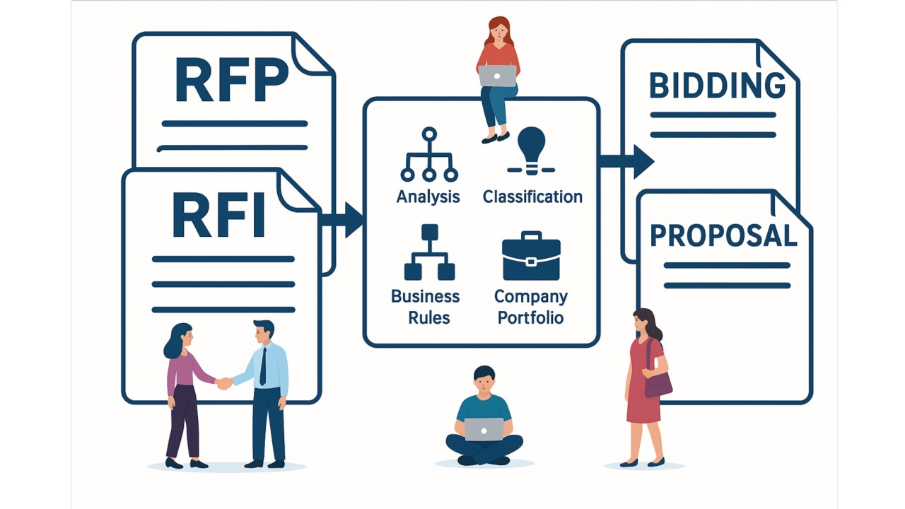
Designed and implemented an AI-driven solution for RFP and RFI processing, automating requirement extraction, classification, and analysis. Developed an intelligent Proposal and Bidding Document Generation system to create structured, high-quality responses, reducing manual effort and ensuring compliance. Leveraging NLP-powered automation, the system enhances accuracy, efficiency, and consistency in the proposal and bidding process.
Skills: NLTK, SpaCy, PyTorch, LangChain, LangGraph, Azure Openai, Fitz, PDFPlumber, Docx
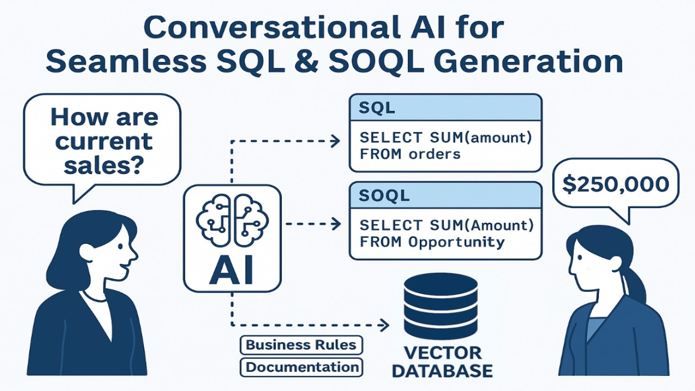
Developed an AI-powered system that enables users to interact with their databases and Salesforce objects using natural language. Implemented query classification to intelligently route user queries to the relevant data sources. Designed and optimized SQL and SOQL generation pipelines using a custom data source schema and RAG models, ensuring efficient and accurate query formation. This solution enhances data accessibility, allowing users to retrieve insights effortlessly without writing complex queries.
Skills: Pandas, LangChain, LangGraph, RAG, Azure Openai, Salesforce APIs
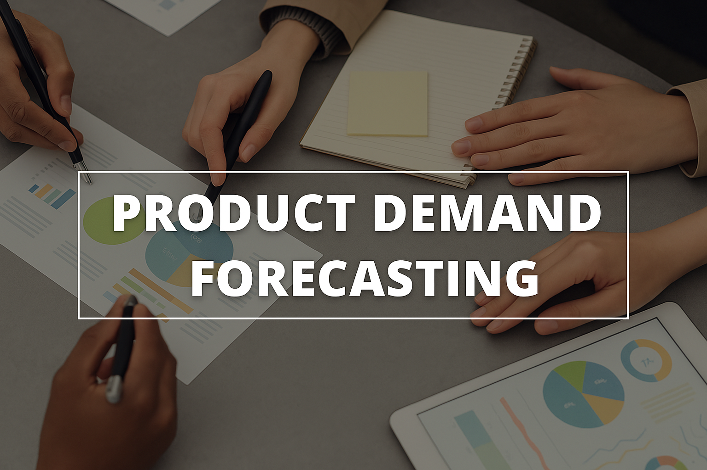
Developed a machine learning-powered time-series forecasting solution to predict product demand, enabling businesses to optimize inventory management and strategic planning. Implemented advanced ML models to analyze historical sales data, identify trends, and generate accurate demand forecasts. This solution helps businesses reduce stockouts, minimize overstocking, and enhance supply chain efficiency, leading to improved decision-making and cost savings.
Skills: Pandas, NumPy, Sklearn, Matplotlib, XGBoost, HyperOpt
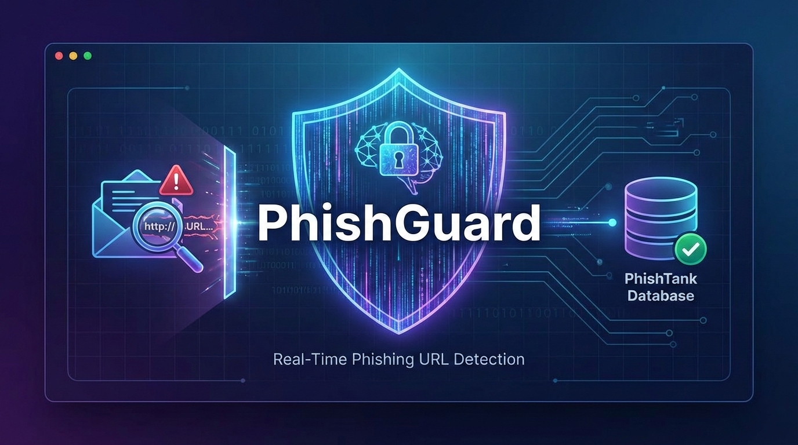
Built a machine learning-powered phishing detection system that analyzes URLs in real-time to identify potential phishing attempts. A Random Forest classifier trained on 20,000+ URLs achieves 99% accuracy by extracting 60 URL features including entropy, domain analysis, and suspicious patterns. The system integrates with the PhishTank database for cross-referencing against known phishing URLs and provides a FastAPI-based REST API for instant verification alongside an interactive Bootstrap 5 web dashboard with statistics, alerts, and severity levels.
Skills: Python, Scikit-learn, FastAPI, Random Forest, Pandas, NumPy, Bootstrap, PhishTank API
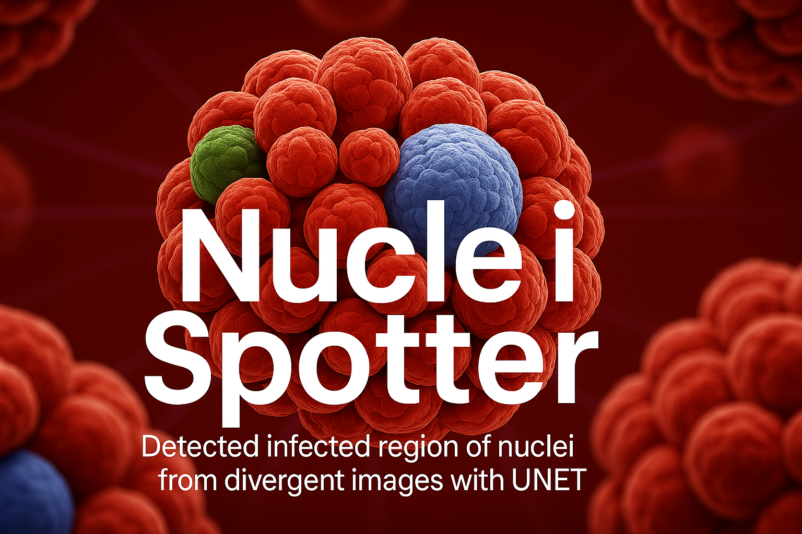
Developed a deep learning solution using the UNet model to accurately detect and segment nuclei in diverse microscopic images. Leveraging advanced image processing techniques, the system identifies nuclei across varying conditions, enhancing biomedical research and diagnostic accuracy. This project improves automated cell analysis, supporting applications in medical imaging, pathology, and drug discovery.
Skills: NumPy, Skimage, Matplotlib, TensorFlow
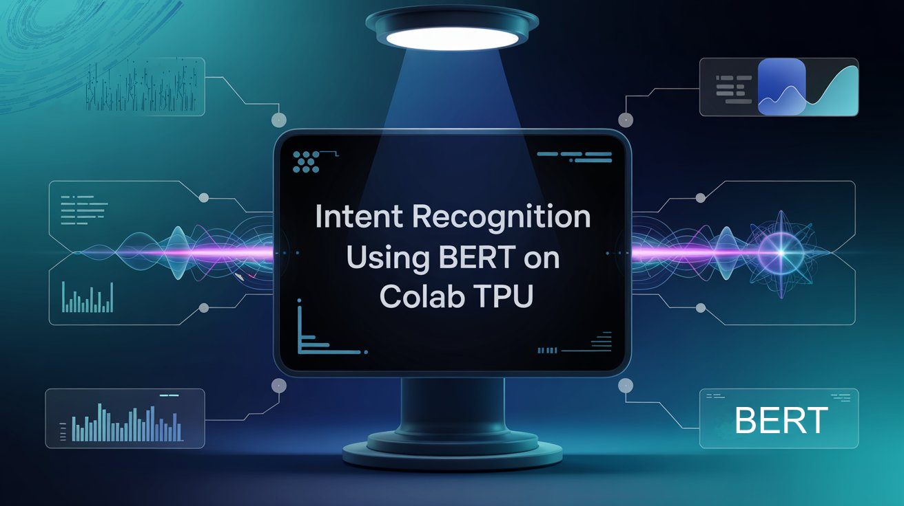
Developed an Intent Recognition Engine leveraging the BERT (Bidirectional Encoder Representations from Transformers) model to accurately classify user intents from natural language input. Implemented the solution using TensorFlow on Google Colab TPU to accelerate training and inference. BERT's deep contextual understanding pretrained on Wikipedia and large corpora enabled high-performance intent detection across diverse inputs. This project showcases the application of state-of-the-art transformer-based NLP models for real-time language understanding tasks.
Skills: NumPy, Pandas, TensorFlow, Bert, Sklearn, Matplotlib, Seaborn
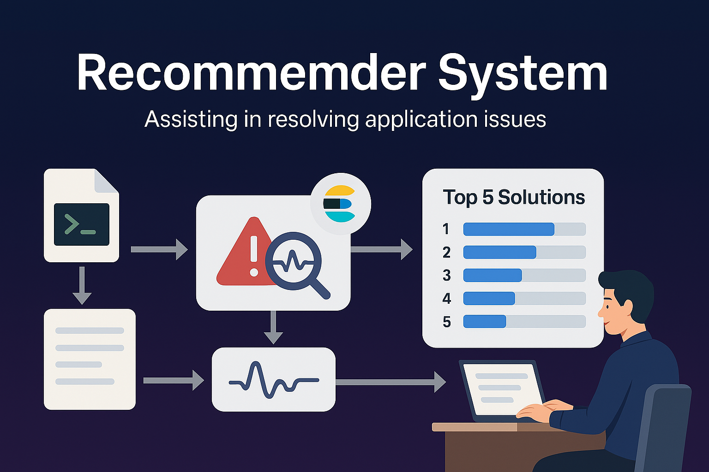
This recommender system is designed to assist in resolving application issues by analyzing error logs and providing context-specific solutions. When an error log is generated, it is first classified as normal or anomalous. If identified as an critical anomaly, the system searches across business documentation, historical group discussions, and pre-configured resolution data stored in Elasticsearch to suggest the most relevant fixes. It returns the top 5 recommended solutions, each with a confidence score, enabling users to take quick and informed action to resolve critical errors efficiently.
Skills: NumPy, Pandas, TensorFlow, BERT, Sklearn, Elasticsearch
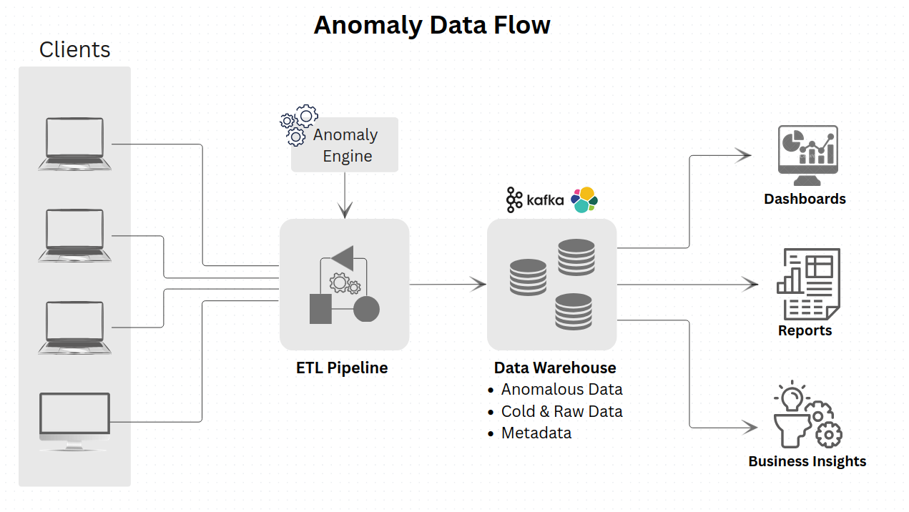
AnomalyFlow is a scalable data engineering pipeline built to streamline log ingestion and anomaly detection. It ingests data from multiple client servers into Kafka, processes it through an anomaly classification engine, and routes the results accordingly publishing anomalies to hot storage (Kafka and Elasticsearch) for real-time analysis, while directing non-anomalous data to cold storage for long-term retention. Designed to enhance analytical capabilities, AnomalyFlow brings structure, speed, and intelligence to large-scale log processing systems.
Skills: Pandas, SpaCy, NLTK, Sklearn, Kafka, Elasticseach, Kibana
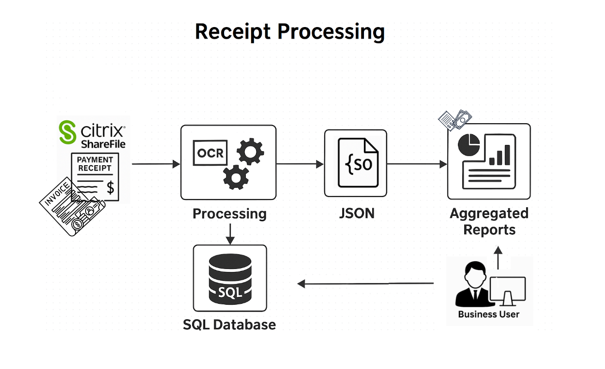
Developed end-to-end ETL pipeline designed to extract and standardize payment receipt data from Citrix ShareFile storage. Each customer folder contains a variety of receipt formats including Images, PDFs, CSVs, and Excel files. The pipeline reads and processes these receipts using OCR for image files and PDF/data parsing tools for other formats. Extracted information is transformed into a standard JSON structure, then loaded into a MySQL database for querying. Users can perform aggregation operations, track business KPIs, and view dynamic reports based on the structured data, enabling smarter financial insights from previously unstructured content.
Skills: Pandas, SpaCy, OCR, PyPDF2, MySQL, Seaborn
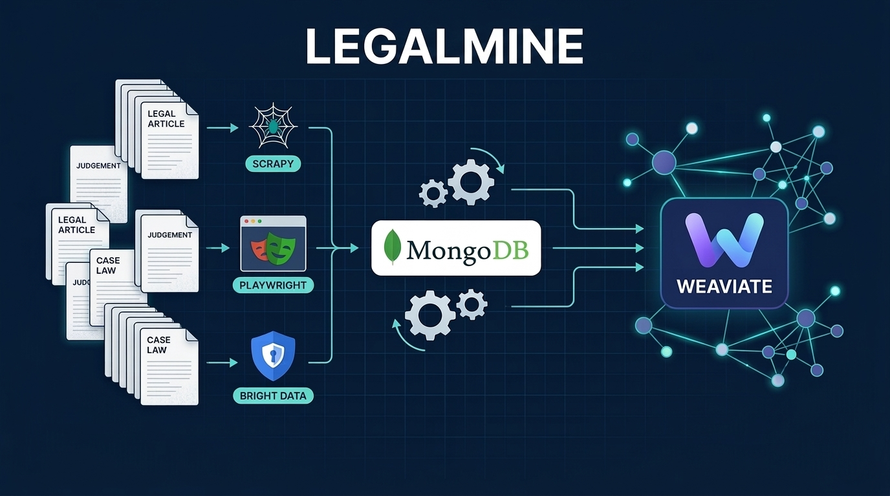
Architected a large-scale ETL pipeline to extract millions of articles, judgements, case laws, and legislations from diverse legal sources across multiple jurisdictions. Built custom scraping solutions per source using Scrapy, BeautifulSoup, Playwright, Jina AI, and Firecrawl with site-specific logic for pagination, PDF extraction, and dynamic content. Leveraged Bright Data Proxy to bypass Cloudflare and server-side blocking.
Preprocessed and normalized data was persisted in MongoDB, then embedded and indexed in Weaviate to enable semantic search, vector similarity with keyword filtering, and RAG for intelligent legal research.
Skills: Scrapy, BeautifulSoup, Playwright, Jina AI, Firecrawl, Bright Data, MongoDB, Weaviate, Python, httpx
Copyright © All rights reserved.